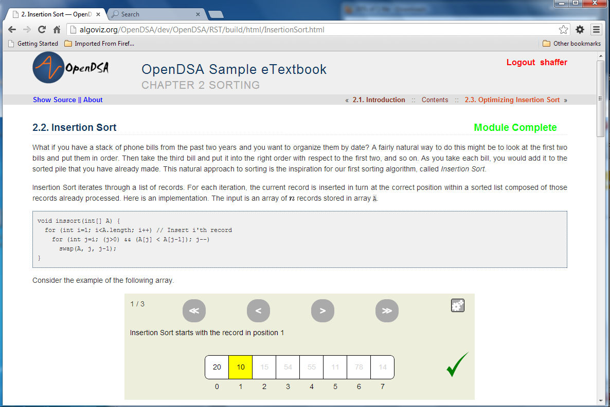
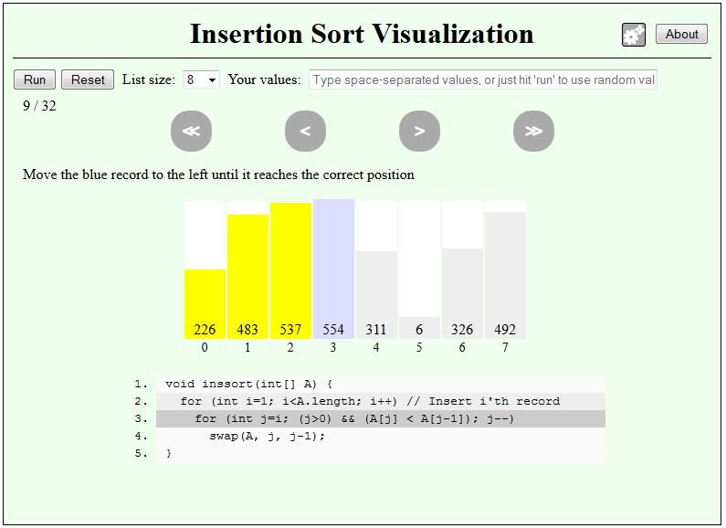
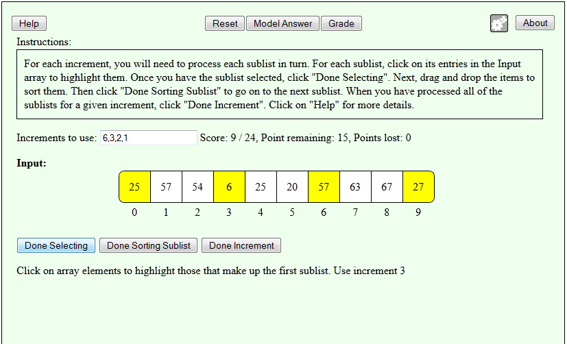
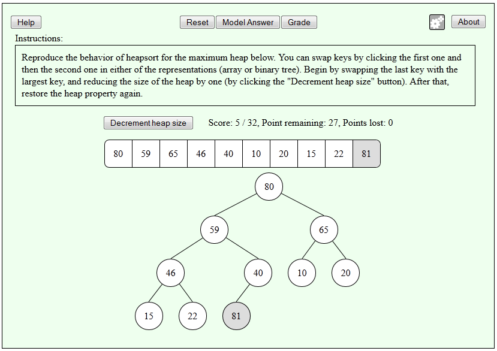
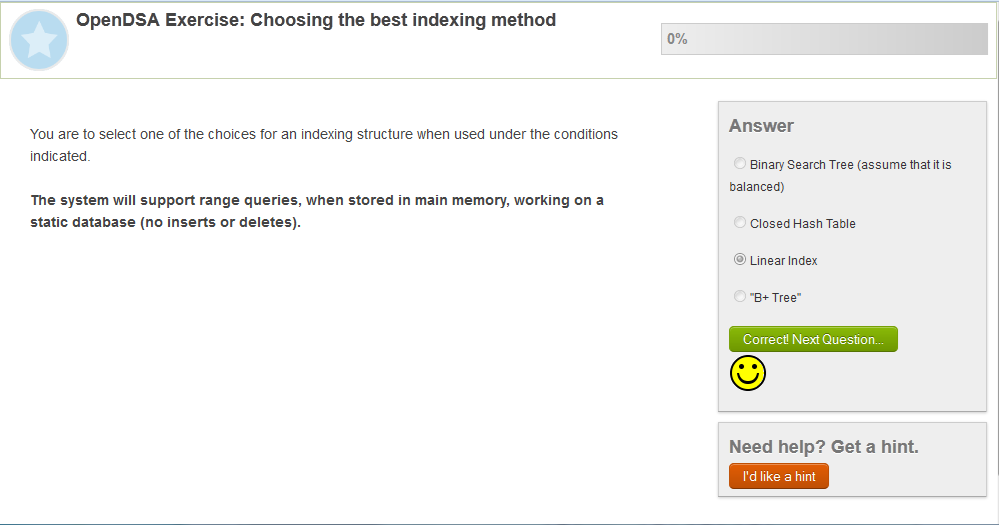
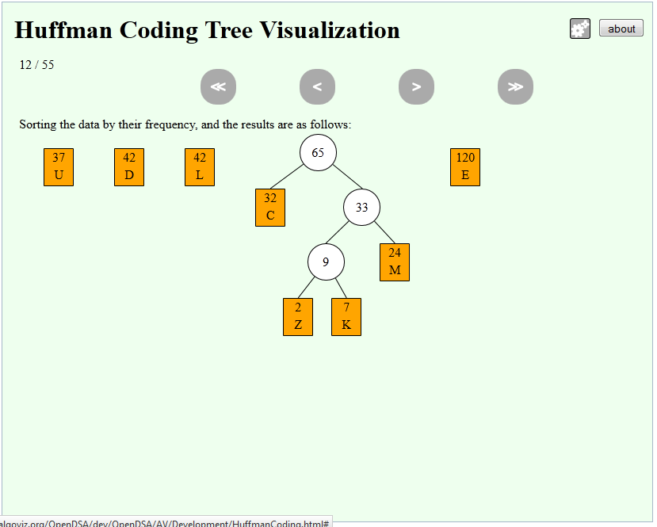
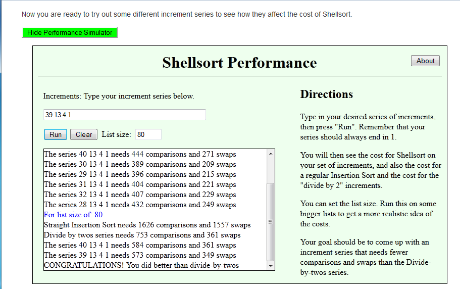

OpenDSA: Open Source Interactive
Data Structures and Algorithms
Click on the images to try things out.
Welcome to the homepage for the OpenDSA Active-eBook Project. Our goal is to develop a complete online interactive textbook for data structures and algorithms (DSA) courses. This page includes a number of screenshots showing various aspects of OpenDSA. But you can also look at the current content. We also have a number of samples here.
For instructors, we have support for making assignments and tracking your students' progress through the material. See information on the instructor's support here.Once completed, OpenDSA will include:
-
Hundreds of instructional modules, where each
module is the equivalent to one topic, such as one sorting algorithm,
corresponding to a couple of pages in a standard textbook.
Each module is of textbook quality.
 -
Every algorithm or data structure is illustrated by an
interactive algorithm visualization. Students could enter their own
test cases to see how the algorithm or data structure works on that
input, and they can control the pacing of the visualization.

-
Every module contains multiple interactive assessment activities
that give students immediate feedback on their proficiency with the
material.
This means many hundreds of exercises.
 
We will accomplish this through an open-source, creative commons environment. "Open Source" means that not only can anyone use the materials, they can also access the source code that generates the materials. "Creative Commons" means that anyone has permission to modify or remix the materials for their own purposes. You as an instructor (or even a student or professional who wants to self study) will be able to pick and choose from the selection of modules and exercises, automatically generating a custom textbook that contains exactly the topics you want. Since all materials are open source, you can rewrite any part if you don't like what is already there. Infrastructure will be included that lets you register students and then track their progress through the modules and exercises.
A major complaint of students in DSA classes is that they do not get enough practice problems, or sufficient other means of testing their proficiency. One of the most important aspects of our vision is a rich set of exercises to ensure that the student understands the material as he/she progresses through the book. Our modules will contain a mix of content, visualizations, and exercises. We make extensive use of the Khan Academy exercise infrastructure to build interactive exercises.
 For more details on our project infrastructure, status, and issues, see the OpenDSA Wiki.
The OpenDSA Forum contains discussions by the participants related to the project.
If you are a new developer on the project, see The OpenDSA Developer's Getting Started Guide. Further documentation for the OpenDSA infrastructure is available here.
Publications and Presentations
- A. Korhonen, T. Naps, C. Boisvert, P. Crescenzi, V. Karavirta, L. Mannila, B. Miller, B. Morrison, S.H. Rodger, R. Ross, and C.A. Shaffer, Requirements and Design Strategies for Open Source Interactive Computer Science eBooks, in Proceedings of the ITiCSE Working Group Reports Conference on Innovation and Technology in Computer Science Education - Working Group Reports (ITiCSE-WGR'13), Canterbury, England, UK, July, 2013, 53-72.
- V. Karavirta and C.A. Shaffer, JSAV: The JavaScript Algorithm Visualization Library, In Proceedings of the 18th Annual Conference on Innovation and Technology in Computer Science Education (ITiCSE 2013), Canterbury, UK, July 2013, 159-164.
- S. Hall, E. Fouh, D. Breakiron, M. Elshehaly, and C.A. Shaffer, Evaluating Online Tutorials for Data Structures and Algorithms Courses, Proceedings of the 2013 ASEE Annual Conference & Exposition (.pdf, presentation), Atlanta, GA, June 2013, Paper #5951.
- A.M. Paul, QBank: A Web-Based Dynamic Problem Authoring Tool, Masters Thesis, Virginia Tech, June 2013. Defense presentation
- D.A. Breakiron, Evaluating the Integration of Online, Interactive Tutorials into a Data Structures and Algorithms Course, Masters Thesis, Virginia Tech, May 2013. Defense presentation
- E. Fouh, D. Breakiron, M. Elshehaly, T.S. Hall, V. Karavirta, and C.A. Shaffer, OpenDSA: using an active eTextbook to teach data structures and algorithms, poster abstract appears in Proceedings of the 44th ACM Technical Symposium on Computer Science Education, SIGCSE 2013, Denver, CO, March 2013, 734.
- E. Fouh, M. Sun, and C.A. Shaffer, OpenDSA: A Creative Commons Active-eBook, a poster presented at SIGCSE 2012, Raleigh, NC, March 2012.
- C.A. Shaffer, V. Karavirta, A. Korhonen and T.L. Naps, OpenDSA: Beginning a Community Hypertextbook Project in Proceedings of 11th Koli Calling International Conference on Computing Education Research, November 17-20, 2011, Koli National Park, Finland, 112--117.
- C.A. Shaffer, T.L. Naps, and E. Fouh, Interactive Textbooks for Computer Science Education in Proceedings of the Sixth Program Visualization Workshop, June 30, 2011, Darmstadt, Germany, 97-103.
Contact
For more information, or to get involved, please contact Cliff Shaffer at .